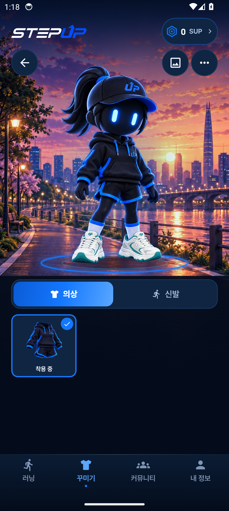
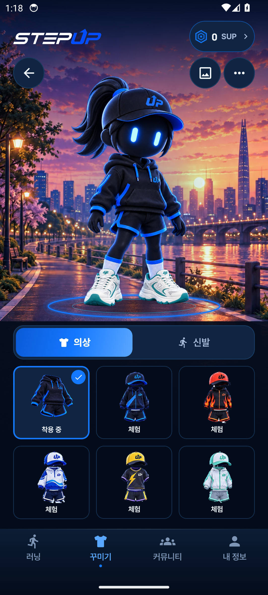
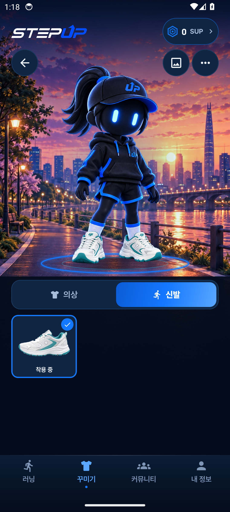

StepUp · 옷장부터 실제 화면으로
큰 전신 미리보기, 의상·신발 분류, 이미지 중심 목록. 공통 로고와 버튼 규격을 유지하면서 배경을 독립적으로 교체할 수 있도록 정리했습니다.
 사용자 기준 이미지
사용자 기준 이미지
큰 캐릭터와 간결한 목록의 비율을 기준으로 삼았습니다.

실제 앱 · 기본 보유 상태
배경 교체 후 캡처. 현재 보유한 기본 의상 한 벌을 표시합니다.

실제 앱 · 데모 목록
추가 의상에는 체험 표시가 붙습니다. 분홍 의상은 후속 자산입니다.

실제 앱 · 신발
동일한 전신 미리보기 아래 신발을 고릅니다.
함께 쓰는 색과 규격
| 요소 | 공통 기준 | 옷장 적용 |
|---|
| 화면 여백 | 좌우 20 dp | 장면은 화면 끝까지, 조작부와 목록은 동일 여백 |
| 상단 로고 / SUP | 원본 로고 26 dp / SUP 최소 높이 48 dp | 공통 헤더 재사용 |
| 아이콘 버튼 | 48 dp 터치 영역 / 24 dp 아이콘 | 뒤로 / 배경 / 더보기 |
| 미리보기 | 캐릭터 전신을 비율 유지하여 표시 | 내용 영역의 56%, 신발 아래 접지 그림자 |
| 목록 | 간격 10 dp / 모서리 12 dp | 기본 3열, 큰 글자는 2열 |
| 하단 탭 | 24 dp 아이콘 / 13 sp 글자 | 러닝 → 꾸미기 → 커뮤니티 → 내 정보 |
배경이 바뀌어도 유지되는 구조
배경 이미지
접지 그림자와 무대
투명 캐릭터
고정된 버튼과 목록
기존 테라스·야경·노을 3종을 교체합니다. 새 배경은 발 위치·수평선·광원을 맞춘 뒤 추가합니다. 앉은 캐릭터와 벤치는 별도 조합으로 준비합니다.
지도 시안의 다음 기준
현재 앱의 실제 2D 지도를 바탕으로 경로선·마커·조작 버튼·하단 정보창을 다듬습니다. 지명과 도로는 지도 이미지에 포함되어 있으며, 임의의 3D 도시 표현이나 장식 배경 교체를 지도 기능처럼 적용하지 않습니다. 지도 출처와 로딩·실패 상태가 표시될 공간을 유지합니다.